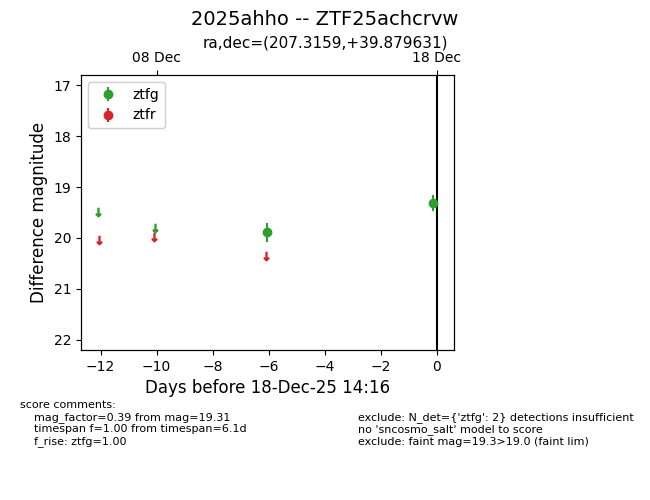
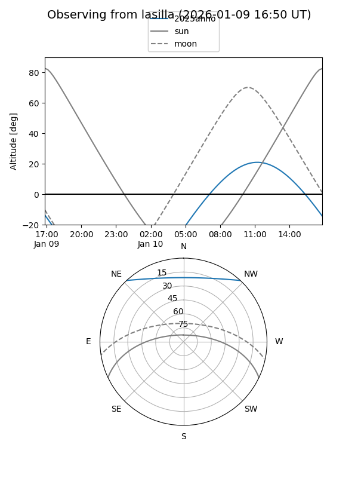
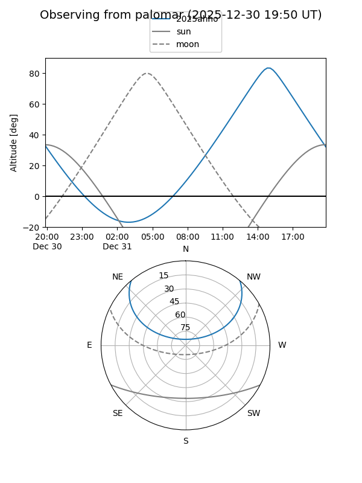
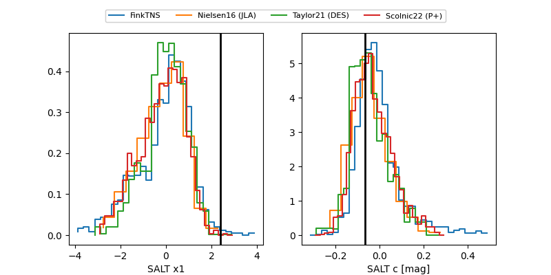

2025ahho
Target 2025ahho at 2025-12-18 15:32
Aliases and brokers:
FINK: fink-portal.org/ZTF25achcrvw
Lasair: lasair-ztf.lsst.ac.uk/objects/ZTF25achcrvw
ALeRCE: alerce.online/object/ZTF25achcrvw
TNS: wis-tns.org/object/2025ahho
YSE: ziggy.ucolick.org/yse/transient_detail/2025ahho
alt names
ZTF25achcrvw (ztf,fink_ztf)
2025ahho (tns,yse)
Coordinates:
equatorial (ra, dec) = 207.3159,+39.87963
equatorial (HMS+DMS) = 13:49:15.81,+39:52:46.67
galactic (l, b) = (83.3594,+72.49919)
Photometry
last ztfg=19.31, ztfr=19.35
2 ztfg, 1 ztfr detections
Lightcurve

Visibility


Additional plots
